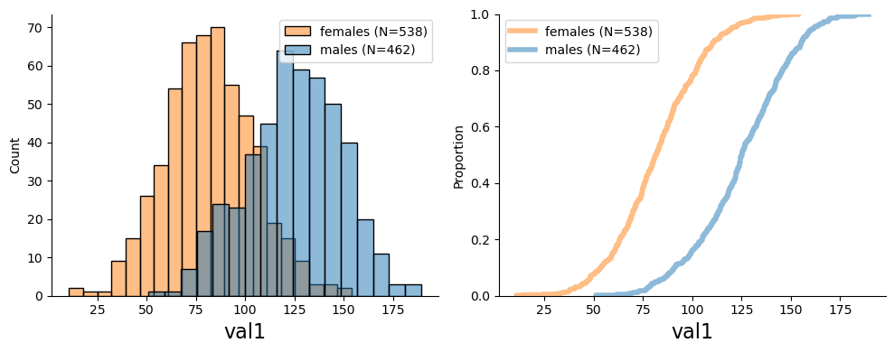

# Generate synthetic data
data = generate_synthetic_data(n=1000)Basic plots
Basic plots for visualizing datasets
data_histplot
data_histplot (data:pandas.core.frame.DataFrame, col:str, feature_str:Optional[str]=None, gender_col:str='sex', plot_both_genders:bool=True, ax=None)
Plots a histogram from a DataFrame for a specific column.
Args: data (pd.DataFrame): The DataFrame containing the data to plot. col (str): The name of the column to plot. feature_str (Optional[str], optional): The name of the feature to plot. Defaults to None. gender_col (str, optional): The name of the column containing gender information. Defaults to “sex”. plot_both_genders (bool, optional): Whether to plot both genders or just one. Defaults to True. ax ([type], optional): The axis to plot on. Defaults to None.
data_histplot(data=data, col="val1", plot_both_genders=False)data_histplot(data=data, col="val1")data_ecdfplot
data_ecdfplot (data:pandas.core.frame.DataFrame, col:str, feature_str:Optional[str]=None, gender_col:str='sex', plot_both_genders:bool=True, ax=None)
Plots an empirical cumulative distribution function (ECDF) from a DataFrame for a specific column.
Args: data (pd.DataFrame): The DataFrame containing the data to plot. col (str): The name of the column to plot. feature_str (Optional[str], optional): The name of the feature to plot. Defaults to None. gender_col (str, optional): The name of the column containing gender information. Defaults to “sex”. plot_both_genders (bool, optional): Whether to plot both genders or just one. Defaults to True. ax ([type], optional): The axis to plot on. Defaults to None.
data_ecdfplot(data=data, col="val1", plot_both_genders=False)data_ecdfplot(data=data, col="val1")
hist_ecdf_plots
hist_ecdf_plots (data:pandas.core.frame.DataFrame, col:str, feature_str:Optional[str]=None, gender_col:str='sex', plot_both_genders:bool=True)
Plots histograms and empirical cumulative distribution functions (ECDFs) from a DataFrame for a specific column.
Args: data: The input DataFrame containing the data to plot. col: The column name to plot. feature_str: The title of the plot. If not provided, the column name will be used. gender_col: The column name indicating sex (default is ‘sex’ - female:0; male:1). plot_both_genders (bool, optional): Whether to plot both genders or just one. Defaults to True.
Returns: None
hist_ecdf_plots(data=data, col="val1")
plot_stats
plot_stats (data:pandas.core.frame.DataFrame, col:str, ax:matplotlib.axes._axes.Axes, color:str, x_position:float=0.3, label:Optional[str]='All')
Adds a text box to an axis object with summary statistics for a given column in a pandas DataFrame.
Args: data (pd.DataFrame): The pandas DataFrame containing the data to calculate statistics for. col (str): The name of the column to calculate statistics for. ax (plt.Axes): The axis object to add the text box to. color (str): The color of the text box. x_position (float, optional): The x position of the text box. Defaults to 0.3. label (Optional[str], optional): The label to display in the text box. Defaults to “All”.
plot_hist_stats
plot_hist_stats (data:pandas.core.frame.DataFrame, col:str, feature_str:Optional[str]=None, gender_col:str='sex', plot_both_genders:bool=True)
Plots a histogram of a given column in a pandas DataFrame and adds summary statistics to the plot.
Args: data (pd.DataFrame): The pandas DataFrame containing the data to plot. col (str): The name of the column to plot. feature_str (Optional[str], optional): A string describing the feature being plotted. Defaults to None. gender_col (str, optional): The name of the column containing gender information. Defaults to “sex”. plot_both_genders (bool, optional): Whether to plot statistics separately for males and females. Defaults to True.
# Generate synthetic data
data = generate_synthetic_data(n=1000)plot_hist_stats(data, "val1", plot_both_genders=False)plot_hist_stats(data, "val1")plot_data_collection
plot_data_collection (data:pandas.core.frame.DataFrame, date_col:str='collection_date', feature_str:Optional[str]=None, ax:Optional[matplotlib.axes._axes.Axes]=None)
Plots a histogram of the specified column in a pandas DataFrame and excludes the last point from the plot.
Args: data (pd.DataFrame): The pandas DataFrame containing the data to plot. date_col (str, optional): The name of the column containing the dates. Defaults to “collection_date”. feature_str (Optional[str], optional): The name of the feature to plot. If None, the name of the date column will be used. Defaults to None. ax (Optional[plt.Axes], optional): The axis object to plot on. If None, a new figure and axis will be created. Defaults to None.
plot_data_collection(data, date_col="date_of_research_stage", feature_str="val1")show_fundus
show_fundus (fname:str)
Display a fundus image from an input file path. Args: fname (str): The file path to the fundus image.